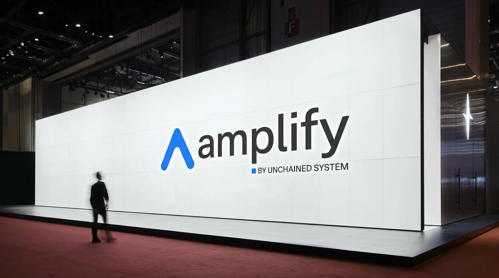
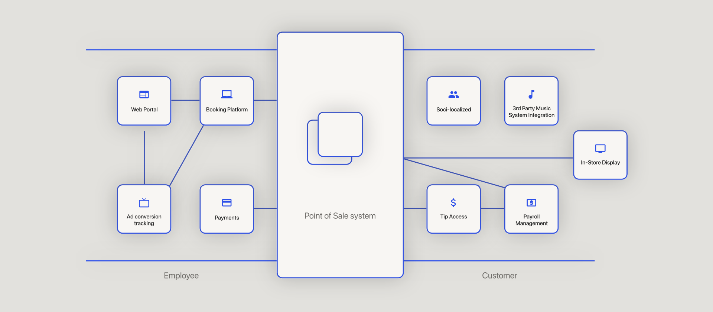
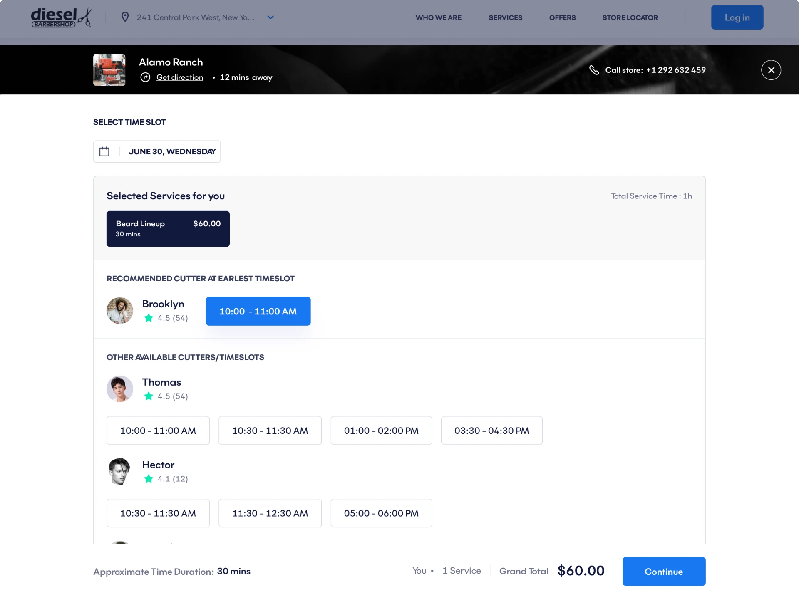
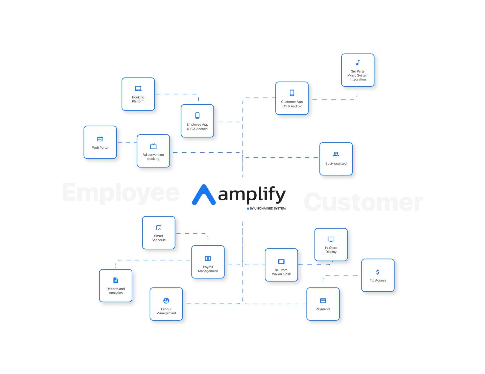
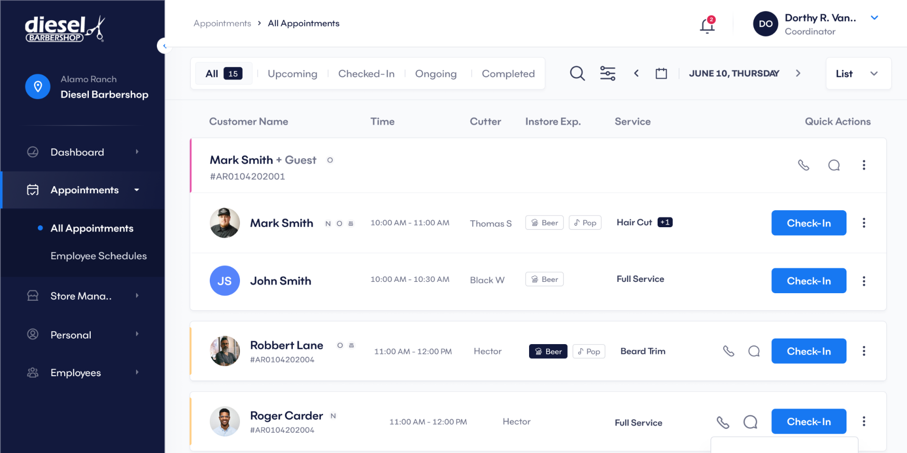
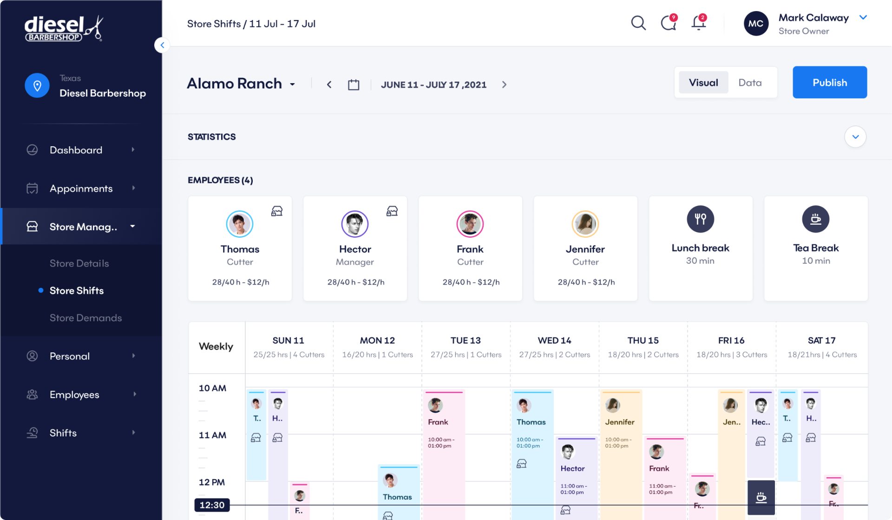
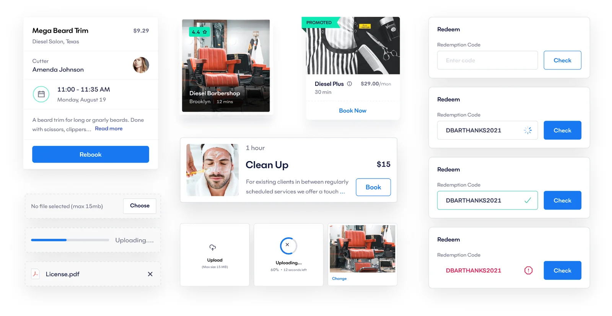

01
Date & Time
Case Study · 2021 — 2022
A US-based barbershop management platform serving 8 user roles — redesigned from the ground up to eliminate workflow fragmentation and deliver a seamless experience across every seat in the business.

01 — Overview
Amplify is a multi-tenant SaaS platform built specifically for the barbershop industry in the United States. It covers the full business lifecycle — from franchise management down to individual client bookings — in a single platform.
None of these roles had a coherent shared experience. Each user was working around the platform rather than with it. The product had the right ambition — one platform for everything — but it had never been designed as a system. It had been assembled as a collection of features.
My Role
End-to-end product design — user research, information architecture, wireframes, high-fidelity UI across all user roles, design system, and developer handoff.
02 — The Problem
Amplify's core promise was consolidation — bring everything into one place. But the reality users were living in was the opposite. We ran interviews with owners, managers, barbers, and clients to understand what was actually happening day to day.
01
No visibility into employee schedules. No way to upsell products from within the workflow. Reporting and store demand data existed, but not in a form that supported real decisions.
02
Walk-ins, phone calls, and messages all needed to be handled manually — and there was no single place to do it. Scheduling created constant conflicts because availability, service duration, and chair assignments weren't connected.
03
There was no self-serve booking flow that worked. Clients were being redirected to third-party platforms — which meant Amplify wasn't capturing the most basic interaction in the barbershop business.
The data confirmed the friction was systemic
"This wasn't a UI problem. It was a structural one."
03 — Research & Discovery
Research covered all four primary user groups — Owners, Managers/Employees, Barbers, and Clients. The goal was to map the real workflows, not the intended ones.
Method 01
Direct sessions with owners, barbers, employees, and clients to surface pain points, workarounds, and unmet needs across the booking and management lifecycle.
Method 02
Evaluated the existing platform against core usability principles — booking flow, scheduling management, and navigation structure. Issues found: redundant steps, inconsistent navigation, no visual hierarchy.
Method 03
Mapped every user journey from entry to completion — booking, scheduling, shop management, walk-in handling. Gaps between intended flows and actual behaviour surfaced clearly.

Clients couldn't self-serve. Barbers were booking on behalf of clients through manual channels. The same appointment was being created through three different paths with no single source of truth.
No shared view of barber availability, service duration, and time slot capacity. Every scheduling decision required mental calculation or a conversation.
No consolidated view of store demand, employee productivity, or product sales. Management decisions were based on memory and manual tracking.
The same action was accessed through different paths depending on which part of the app you were in. No consistent information architecture across roles.
04 — The Hardest Problem
The booking flow was the highest-traffic, highest-stakes interaction in the entire platform — and it was the most broken.
The core challenge: a single appointment is the intersection of four variables that all depend on each other.
The 4 Interdependent Variables
These four elements can't be selected independently. The available times depend on which barber. The available barbers depend on the service. The service duration determines which timeslots are valid. Change one, and the others shift.
How we solved it
Most booking systems solve this by forcing users to make selections in a fixed sequence and reloading the options at each step — which is slow, confusing, and breaks the moment a user changes their mind.
We designed the four elements as a single connected component — a real-time availability matrix that updates all four variables simultaneously as the user makes any single selection. No reloads. No locked sequences. No dead ends.
The client picks any starting point — a barber they prefer, a time that works, a service they want — and the system shows what's possible from there. Unavailable combinations are hidden, not blocked with error messages.
"It sounds simple. It took weeks to get right. But the result was a booking flow that felt like it had no moving parts."

05 — Solution
The redesign rebuilt Amplify from the structure up — new information architecture, unified navigation logic, and role-appropriate interfaces that all operated inside the same coherent system.

The client-facing booking flow was reduced to its essential steps — date, barber, service, timeslot — presented as a single connected experience. Employees and barbers got a parallel flow for handling walk-ins, calls, and messages, feeding into the same scheduling system.

Each role got a view calibrated to their actual work. Managers and owners got the Store Demand screen — a data view that uses historical patterns to surface the busiest periods, so staffing and scheduling decisions are proactive rather than reactive.

A consistent navigation structure across all eight roles, with clear hierarchy and predictable paths. The same mental model works whether you're a barber checking your schedule or a franchise owner reviewing performance across locations.
A component and token architecture built to cover the full scope of the platform — consistent grid, reusable UI components, defined interaction states — so the product could grow without accumulating design debt.

06 — Outcome
Validated through 18 moderated usability testing sessions and unmoderated testing with 200+ participants. Results were consistent across all five metrics tracked.
07 — Process
User interviews across all four primary roles. Heuristic evaluation of the existing platform. Journey mapping and workflow analysis to surface real gaps. User personas and empathy maps to align the team.
Design thinking workshops to explore solutions. Multiple wireframe iterations tested against real user tasks. Interactive prototypes for all key flows — booking, scheduling, management.
Moderated usability sessions with real users. Unmoderated testing at scale. A/B testing on key design decisions including the booking component and navigation structure. Accessibility compliance before handoff.
08 — Key Learnings
Every role-specific interface tempts you to solve the problem locally. The right move is to design the shared system first and let the role-specific views be expressions of it.
Clients don't know the booking component runs on a real-time availability matrix. They just know it doesn't make them think. That's the job — hide the complexity, not the product.
A 22% improvement in task efficiency isn't a UX win — it's an operational win. Owners are running more appointments. Barbers are losing less time to scheduling conflicts. The design work had a direct line to revenue.
The existing platform had screens. What it was missing was structure. Every design decision on Amplify was easier because we fixed the IA first.
Up next
The Core Systems and Onboarding case studies are in progress. In the meantime, if you want to talk through a product problem — get in touch.